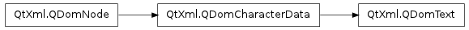

QDomText ¶

Inherited by: QDomCDATASection
Detailed Description ¶
The PySide.QtXml.QDomText class represents text data in the parsed XML document.
You can split the text in a PySide.QtXml.QDomText object over two PySide.QtXml.QDomText objecs with PySide.QtXml.QDomText.splitText() .
For further information about the Document Object Model see Level 1 and Level 2 Core. For a more general introduction of the DOM implementation see the PySide.QtXml.QDomDocument documentation.
- class PySide.QtXml. QDomText ¶
- class PySide.QtXml. QDomText ( x )
-
Parameters: x – PySide.QtXml.QDomText Constructs an empty PySide.QtXml.QDomText object.
To construct a PySide.QtXml.QDomText with content, use QDomDocument.createTextNode() .
Constructs a copy of x .
The data of the copy is shared (shallow copy): modifying one node will also change the other. If you want to make a deep copy, use PySide.QtXml.QDomNode.cloneNode() .
- PySide.QtXml.QDomText. splitText ( offset ) ¶
-
Parameters: offset – PySide.QtCore.int Return type: PySide.QtXml.QDomText Splits this DOM text object into two PySide.QtXml.QDomText objects. This object keeps its first offset characters and the second (newly created) object is inserted into the document tree after this object with the remaining characters.
The function returns the newly created object.
See also